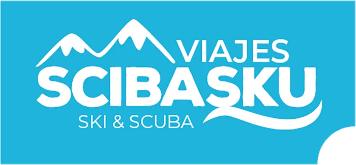
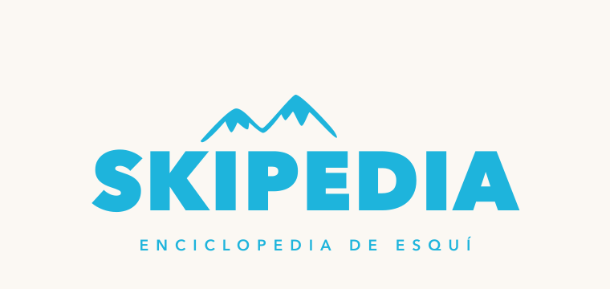
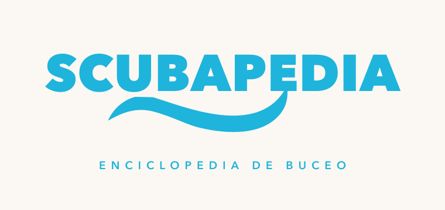

Misma familia Scibasku · mismo lockup · SkiPedia lleva la montaña arriba; Scubapedia lleva la ola debajo y el texto encima.

SKI & SCUBA — literalmente las dos verticales. Cada hija coge su mitad del ADN.


SCUBAPEDIA, Avenir Next 800, 88px, centrado, color aqua #16A6C9.ENCICLOPEDIA DE BUCEO, 19px, tracking 9, azul océano #0A5570.#fbf8f3 en el máster de presentación; transparente para web.~/projects/scubapedia/brand/):scubapedia-logo.svg · -transparent.svg · -nav.svg · -onaqua.svg · scibasku-ola.svg (ola aislada)
public/ ni desplegado: el sitio sigue en producción con el logo anterior (la “montaña invertida”). Si te gusta esta ola, lo siguiente es hornear PNG @3x y desplegar — me lo dices y voy.